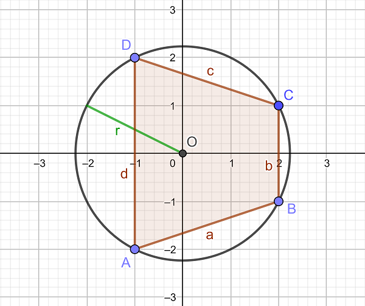
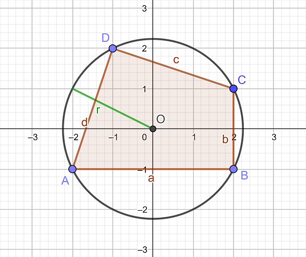

Project Euler 723
Project Euler 723
题目
Pythagorean Quadrilaterals
A pythagorean triangle with catheti \(a\) and \(b\) and hypotenuse \(c\) is characterized by the well-known equation \(a^2+b^2=c^2\). However, this can also be formulated differently:
When inscribed into a circle with radius \(r\), a triangle with sides \(a\), \(b\) and \(c\) is pythagorean, if and only if \(a^2+b^2+c^2=8r^2\).
Analogously, we call a quadrilateral \(ABCD\) with sides \(a\), \(b\), \(c\) and \(d\), inscribed in a circle with radius \(r\), a pythagorean quadrilateral, if \(a^2+b^2+c^2+d^2=8\, r^2\).
We further call a pythagorean quadrilateral a pythagorean lattice grid quadrilateral, if all four vertices are lattice grid points with the same distance \(r\) from the origin \(O\) (which then happens to be the centre of the circumcircle).
Let \(f(r)\) be the number of different pythagorean lattice grid quadrilaterals for which the radius of the circumcircle is \(r\). For example \(f(1)=1\), \(f(\sqrt 2)=1\), \(f(\sqrt 5)=38\) and \(f(5)=167\).
Two of the pythagorean lattice grid quadrilaterals with \(r=\sqrt 5\) are illustrated below:


Let \(\displaystyle S(n)=\sum_{d \mid n} f(\sqrt d)\). For example, \(S(325)=S(5^2 \cdot 13)=f(1)+f(\sqrt 5)+f(5)+f(\sqrt {13})+f(\sqrt{65})+f(5\sqrt{13})=2370\) and \(S(1105)=S(5\cdot 13 \cdot 17)=5535\).
Find \(S(1411033124176203125)=S(5^6 \cdot 13^3 \cdot 17^2 \cdot 29 \cdot 37 \cdot 41 \cdot 53 \cdot 61)\).
解决方案
可见，若圆上有整点，则 \(r^2=x^2+y^2\) 必为整数，所以只需讨论 \(N=r^2\in\mathbb Z\)。
把点当作向量（从原点出发），并用内积表示长度：\(|u-v|^2=(u-v)\cdot(u-v)=|u|^2+|v|^2-2u\cdot v.\)因为四点都在半径为 \(r\) 的圆上，所以\(|A|^2=|B|^2=|C|^2=|D|^2=r^2.\)于是
\[ \begin{aligned} a^2+b^2+c^2+d^2 &=|A-B|^2+|B-C|^2+|C-D|^2+|D-A|^2\\ &=2(|A|^2+|B|^2+|C|^2+|D|^2)-2(A\cdot B+B\cdot C+C\cdot D+D\cdot A)\\ &=8r^2-2(A\cdot B+B\cdot C+C\cdot D+D\cdot A). \end{aligned} \]
另一方面利用内积交换律：\((A+C)\cdot(B+D)=A\cdot B+A\cdot D+C\cdot B+C\cdot D= A\cdot B+D\cdot A+B\cdot C+C\cdot D.\)因此\(A\cdot B+B\cdot C+C\cdot D+D\cdot A=(A+C)\cdot(B+D),\)从而\(a^2+b^2+c^2+d^2=8r^2\Longleftrightarrow(A+C)\cdot(B+D)=0.\)
令\(u=A+C, v=B+D.\)条件就是 \(u\cdot v=0\)。有如下情形：
- 情形 1： \(u=0\)，即 \(A=-C\)。这表示对角线 \(AC\) 是直径。
- 情形 2： \(v=0\)，即 \(B=-D\)。这表示对角线 \(BD\) 是直径。
- 情形 3： \(u\neq 0\) 且 \(v\neq 0\) 且 \(u\perp v\)。
当 \(u\neq 0\) 时，\(u/2\) 是弦 \(AC\) 的中点向量（从圆心指向弦中点的半径），而半径必垂直于弦，所以 \(u\perp AC\)。同理 \(v\perp BD\)。由于旋转 \(90^\circ\) 保角，\(u\perp v\) 等价于弦方向 \(AC\perp BD\)。因此情形 3 等价于“两条对角线互相垂直且都不是直径”。
下面把至少一条对角线是直径的计数称为 1 类，把对角线垂直且无直径称为 2 类。
设\(N\)的质因子分解为\(\displaystyle N=2^a\prod_{p\equiv 1\pmod 4}p^{\alpha_p}\prod_{q\equiv 3\pmod 4}q^{\beta_q}.\)
两平方和定理给出：
\[ r_2(N)=\#\{(x,y)\in\mathbb Z^2:x^2+y^2=N\}= \begin{cases} 0, & \exist q\equiv 3\pmod 4: \beta_q\equiv 1\pmod 2,\\ 4\displaystyle\prod_{p\equiv 1\pmod 4}(\alpha_p+1), & \text{otherwise.} \end{cases} \]
也就是说：若某个 \(4k+3\) 质因子的指数为奇数，则圆上没有整点，从而\(F(N)=0.\)若所有 \(4k+3\) 质因子指数均为偶数，则整点总数仍只由 \(4k+1\) 质因子指数决定。
下面只讨论所有 \(\beta_q\) 都为偶数的情形。定义核心部分\(\displaystyle N_\ast=\prod_{p\equiv 1\pmod 4}p^{\alpha_p}.\)并记\(\displaystyle T=(1+i)^a\prod_{q\equiv 3\pmod 4}q^{\beta_q/2}\in\mathbb Z[i].\)则\(\displaystyle|T|^2=2^a\prod_{q\equiv 3\pmod 4}q^{\beta_q},N=|T|^2N_\ast.\)
考虑高斯整数上的映射\(z\mapsto Tz.\)它把整点映到整点，并且是一个相似变换（整数线性变换和缩放旋转）；同时它把满足\(|z|^2=N_\ast\)的整点一一对应到满足\(|z|^2=N\)的整点。
因此它保持：圆周上的循环顺序，是否互为对径点（直径情形）；向量正交关系（从而保持 pythagorean 条件）；四边形计数。
所以当所有 \(\beta_q\) 为偶数时，有\(F(N)=F(N_\ast).\)
换句话说：对一般 \(N\)，\(F(N)\) 的非平凡部分只取决于 \(p\equiv 1\pmod 4\) 的指数；\(2\) 的指数和 \(4k+3\) 质因子的偶数指数只造成整体相似变换。
在可表示情形（即所有 \(\beta_q\) 均为偶数）下，令\(\displaystyle q=\prod_{p\equiv 1\pmod 4}(\alpha_p+1).\)则\(r_2(N)=4q.\)圆上的点成对互为相反数，所以直径条数为\(k=\dfrac{r_2(N)}{2}=2q.\)
接下来对1类解进行计数。注意，这里是在可表示情形下进行；若存在某个 \(q\equiv 3\pmod 4\) 使 \(\beta_q\) 为奇数，则1类节的数量为 \(0\)。
先固定一条直径作为对角线（比如 \(AC\)）：直径可选 \(k\) 条；固定该直径后，圆周被分成两个开半圆，每边都有 \(k-1\) 个可选点（不含端点）。取 \(B\) 在一侧、\(D\) 在另一侧，一共 \((k-1)^2\) 种。
因此初步得到\(k(k-1)^2\)个四边形。但两个对角线都是直径的四边形被算了两次：它们对应选两条不同直径作为两条对角线，数量为\(\dbinom{k}{2}.\)所以\(F_1(N)=k(k-1)^2-\dbinom{k}{2}.\)代入 \(k=2q\) 可化为\(F_1(N)=8q^3-10q^2+3q.\)
接下来对2类解进行计数。和前面类似，若存在某个 \(q\equiv 3\pmod 4\) 使 \(\beta_q\) 为奇数，则2类节的数量为 \(0\)。
关键是：当\(\displaystyle N_\ast=\prod p_i^{e_i} (p_i\equiv1\pmod4)\)时，圆上整点在高斯整数 \(\mathbb Z[i]\) 中对应范数为 \(N_\ast\)的元素，其极角可以写成\(\displaystyle\theta = s\frac{\pi}{2}+\sum_i t_i\omega_i,\)其中\(s\in\{0,1,2,3\},\)而\(t_i\in\{-e_i,-e_i+2,\dots,e_i-2,e_i\}\)（共\(e_i+1\)个元素），因此两条对角线垂直（且不是直径）等价于\(\theta_A+\theta_C\equiv \theta_B+\theta_D+\pi\pmod{2\pi}.\)由于不同素因子给出的 \(\omega_i\) 相互独立，这迫使每个素因子坐标分别满足\(t_i^A+t_i^C=t_i^B+t_i^D.\)
令集合\(T_e=\{-e,-e+2,\dots,e\}.\)把\(t=-e+2j\)映射为\(j\in\{0,1,\dots,e\},\)则条件\(t^A+t^C=t^B+t^D\)等价于\(j_A+j_C=j_B+j_D.\)设 \(g_e(s)\) 为满足 \(j_1+j_2=s\) 的有序对数，则
\[ g_e(s)= \begin{cases} s+1,&0\le s\le e,\\ 2e-s+1,&e\le s\le 2e. \end{cases} \]
于是四元组数为
\[ P(e)=\sum_{s=0}^{2e}g_e(s)^2 =1^2+2^2+\cdots+(e+1)^2+e^2+\cdots+1^2 =\frac{(e+1)(2e^2+4e+3)}{3}. \]
把所有素因子独立相乘，并考虑四分之一旋转带来的 \(4\) 倍对称，得到主项\(4\prod P(e).\)接着需要扣除/补回几类被多算或不该出现的配置，最终可以整理为：每个局部都满足 \(t^A=t^B\) 且 \(t^C=t^D\)（对应某些退化重计数），需要减去\(\displaystyle 4\prod (e+1)^2.\)出现直径（要从2类解中剔除），其单素因子局部计数为\(\left\lceil \dfrac{(e+1)^2}{2}\right\rceil,\)整体需减去\(\displaystyle4\prod \left\lceil \frac{(e+1)^2}{2}\right\rceil.\)正方形在上面扣除中被多扣，需要加回\(\displaystyle4\prod (e+1).\)
因此（在可表示情形下），可整理出 \[ F_{\mathrm{2}}(N)= 4\prod_{p\equiv1\pmod4}\frac{({\alpha_p}+1)(2{\alpha_p}^2+4{\alpha_p}+3)}{3} -4\prod_{p\equiv1\pmod4}({\alpha_p}+1)^2 -4\prod_{p\equiv1\pmod4}\left\lceil \frac{({\alpha_p}+1)^2}{2}\right\rceil +4\prod_{p\equiv1\pmod4}({\alpha_p}+1). \]
最终，对于\(N\)的分解，若存在某个 \(q\equiv 3\pmod 4\) 使 \(\beta_q\) 为奇数，则\(F(N)=0.\)
否则（即所有 \(\beta_q\) 均为偶数），由第 3 节的约化结论，\(F(N)\) 与 \(a\)、\(\beta_q\) 无关，只由 \(\alpha_p\) 决定。把1类解和2类解相加并整理，得到
\[ F(N)= 7\prod_{p\equiv1\pmod4}(\alpha_p+1) -14\prod_{p\equiv1\pmod4}(\alpha_p+1)^2 -4\prod_{p\equiv1\pmod4}\left\lceil\frac{(\alpha_p+1)^2}{2}\right\rceil +8\prod_{p\equiv1\pmod4}(\alpha_p+1)^3 +4\prod_{p\equiv1\pmod4}\frac{(\alpha_p+1)(2\alpha_p^2+4\alpha_p+3)}{3}. \]
其中空乘积按 \(1\) 处理。
设\(n\)的分解为\(\displaystyle n=2^a\prod_{p\equiv 1\pmod 4}p^{e_p}\prod_{q\equiv 3\pmod 4}q^{f_q}.\)因为 \(F(d)\) 在某个 \(q\equiv3\pmod4\) 的约数指数为奇数时为 \(0\)，所以对约数求和时：对素因子 \(2\)，约数指数 \(0,1,\dots,a\) 都有贡献，贡献乘子\(a+1;\)对每个 \(q\equiv3\pmod4\)，只有偶数指数有贡献，贡献乘子\(\left\lfloor\dfrac{f_q}{2}\right\rfloor+1.\)剩余的非平凡部分只来自 \(p\equiv1\pmod4\) 的指数，仍按原来的五类乘积求和。
定义 \[ M(n)=(a+1)\prod_{q\equiv3\pmod4}\left(\left\lfloor\frac{f_q}{2}\right\rfloor+1\right). \]
对单个 \(p\equiv1\pmod4\) 的指数上界 \(e\)，需要以下和式（令 \(k\) 为该素因子的约数指数）：
- \(\displaystyle\sum_{k=0}^e (k+1)=\frac{(e+1)(e+2)}{2}\)
- \(\displaystyle\sum_{k=0}^e (k+1)^2=\frac{(e+1)(e+2)(2e+3)}{6}\)
- \(\displaystyle\sum_{k=0}^e \left\lceil\frac{(k+1)^2}{2}\right\rceil=\frac12\left(\frac{(e+1)(e+2)(2e+3)}{6}+\left\lceil\frac{e+1}{2}\right\rceil\right)\)
- \(\displaystyle\sum_{k=0}^e (k+1)^3=\left(\frac{(e+1)(e+2)}{2}\right)^2\)
- \(\displaystyle\sum_{k=0}^e \frac{(k+1)(2k^2+4k+3)}{3}=\frac{(e+1)(e+2)(e^2+3e+3)}{6}\)
于是得到闭式：
\[ \begin{aligned} S(n)=M(n)\Bigg[& 7\prod_{p\equiv1\pmod4}\frac{(e_p+1)(e_p+2)}{2} -14\prod_{p\equiv1\pmod4}\frac{(e_p+1)(e_p+2)(2e_p+3)}{6}\\ &-4\prod_{p\equiv1\pmod4}\frac12\left(\frac{(e_p+1)(e_p+2)(2e_p+3)}{6}+\left\lceil\frac{e_p+1}{2}\right\rceil\right)\\ &+8\prod_{p\equiv1\pmod4}\frac{(e_p+1)^2(e_p+2)^2}{4} +4\prod_{p\equiv1\pmod4}\frac{(e_p+1)(e_p+2)(e_p^2+3e_p+3)}{6} \Bigg]. \end{aligned} \]
代码
1 | from math import prod |